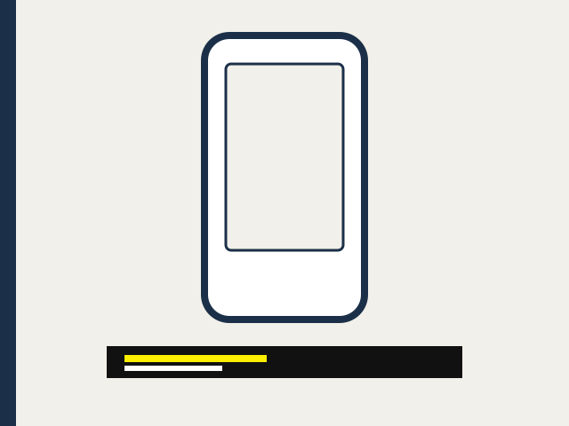

A lesson that still plays when the connection does not
This is the light pack for a slow phone. It has sound, text, and this page. It does not include the video.
ይህ ለዝግ ኔትወርክ የተዘጋጀ ቀላል ጥቅል ነው። ድምጽ፣ ጽሑፍ፣ እና ይህ ገጽ አሉት። ቪዲዮውን አያካትትም።

English narration
የአማርኛ ንግግር
The voice is a device voice, eSpeak, so the pack works with no API key. Captions below are the text to trust.
Hana opens her lesson on a phone in Addis Ababa.
ሃና ትምህርቷን በአዲስ አበባ በስልኳ ትከፍታለች።
Picture: A phone is drawn on a paper-coloured screen, with a short caption under it.
Sign gloss: OPEN
She needs English and Amharic captions she can make larger.
የእንግሊዝኛ እና የአማርኛ ጽሑፍ መግለጫዎችን ማተለቅ ትፈልጋለች።
Picture: The caption bar grows taller. The letters are yellow on a black band.
Sign gloss: LARGER
A sign window can move and grow, so Ethiopian Sign Language sits where she needs it.
የምልክት መስኮቱን ማንቀሳቀስና ማተለቅ ትችላለች። የኢትዮጵያ የምልክት ቋንቋ የምትፈልገውን ቦታ ይይዛል።
Picture: A second window lifts off the phone. It is labelled Ethiopian Sign Language.
Sign gloss: SIGN
Audio description says what the picture is doing, for a learner who cannot see it.
የድምጽ መግለጫ ሥዕሉ ምን እንደሚያደርግ ይናገራል። ለማያየው ተማሪ ነው።
Picture: A round speaker icon appears beside the phone.
Sign gloss: SPEAK
When the network is slow she keeps a small pack: sound, text, and a light page.
ኔትወርኩ ሲዘገይ ትንሽ ጥቅል ታስቀምጣለች። ድምጽ፣ ጽሑፍ፣ እና ቀላል ገጽ።
Picture: The phone is replaced by a short stack of pages and a sound file.
Sign gloss: PACK
The lesson on this page is the same one, with the network or without it.
በዚህ ገጽ ላይ ያለው ትምህርት አንድ ነው። ኔትወርክ ቢኖርም ባይኖርም።
Picture: The stack of pages stays in the centre of the screen.
Sign gloss: SAME
English captions · Amharic captions · Audio description cues